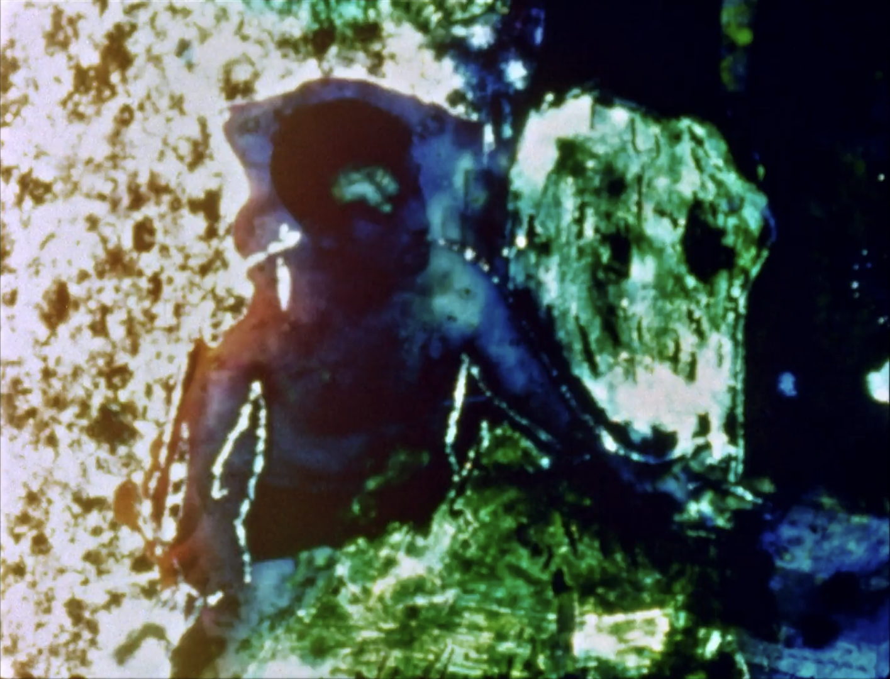
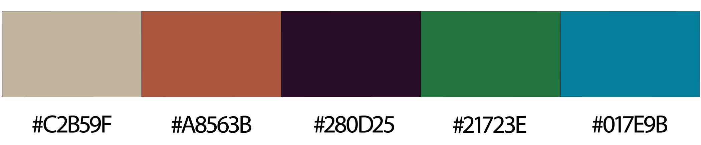
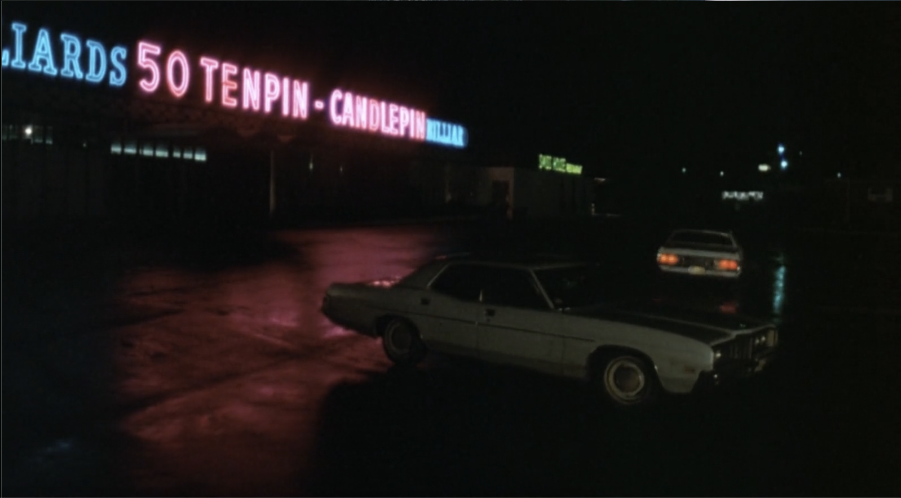
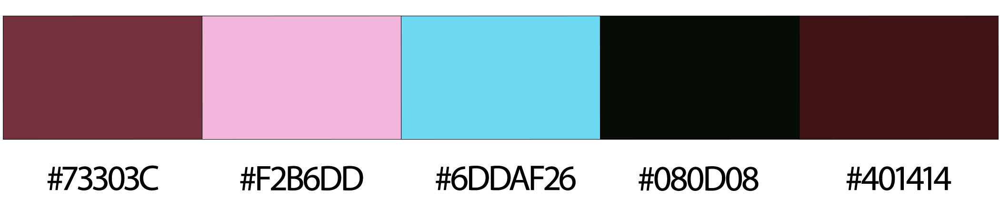
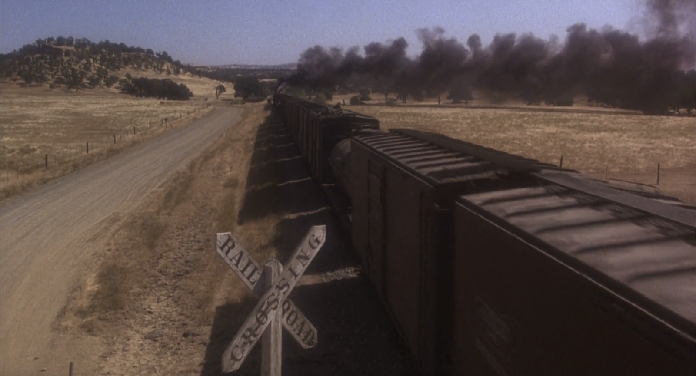
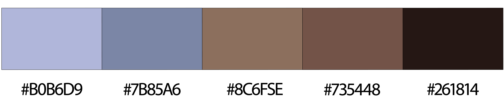
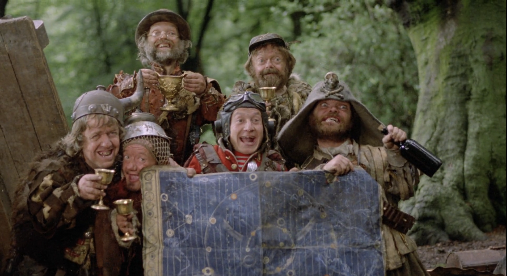
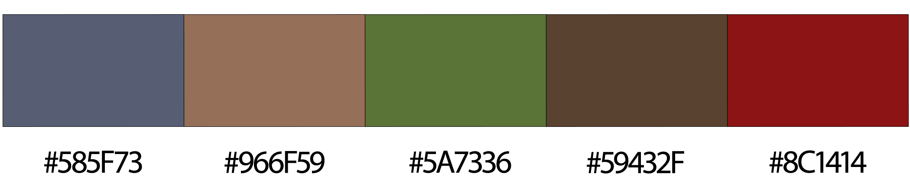
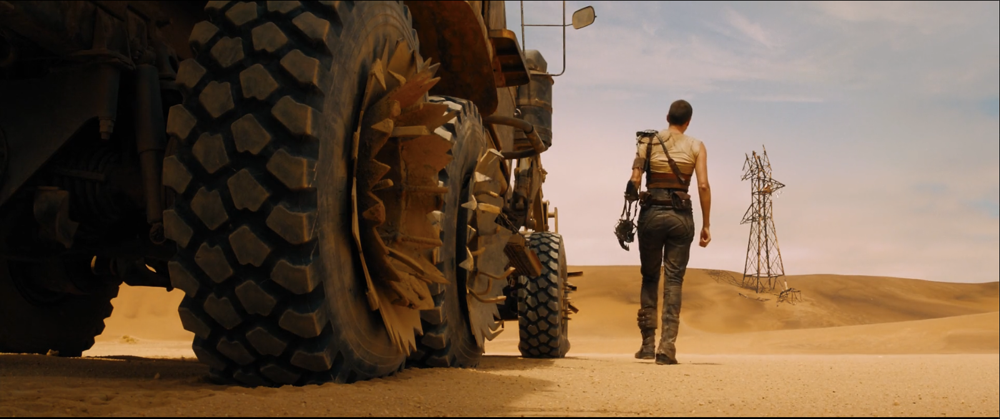
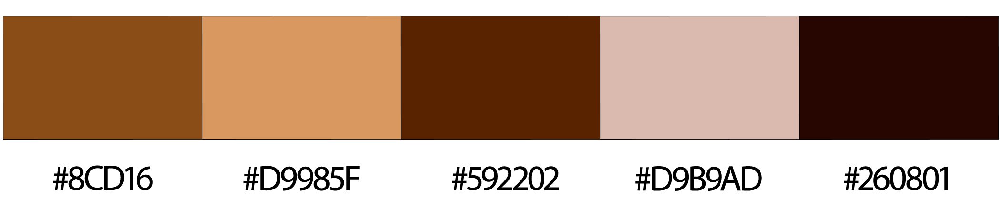

Presented below is a table featuring stills from enigmatic films I've recently enjoyed - coupled with color themes within each image - and how
said theme reflects the deeper meanings within each film.
| Title |
Image |
Colors |
"Eye Myth" (1967) by Stan Brakhage
This iconic experimental film was hand-tinted by director Stan Brakhage and runs
only nine seconds in length. Brakhage's work often explores the relationship between
color and perception, and this film is no exception. The colors in "Eye Myth" are not
just decorative; they serve to enhance the emotional impact of the film, creating a
sense of wonder and introspection. It's color palette utilizes analogous colors which
are represented in the blue-green, green, and blue-violet present in the chosen frame.
|

|

|
"The Friends of Eddie Coyle" (1973) by Peter Yates
This film is a gritty crime drama that explores the world of organized crime in
Boston, starring Robert Mitchum in the title role. The color palette is dominated
by muted tones, reflecting back to us the bleak and sometimes oppressive atmosphere
of the film, and emphasizing the moral ambiguity and desperation of the characters. But,
not without flashes of violence, represented here by the bright neon signage in what is
the final image of the film. |

|

|
"Bound for Glory" (1976) by Hal Ashby
This film is a biographical drama about the life of folk singer Woody Guthrie,
starring David Carradine. The color palette is rich and warm, with lots of blues (both
literally and figuratively) and browns, evoking the nostalgia of the Great Depression
era. The colors reflect the themes of hope and resilience in the face of hardship, as well
as the beauty of the American landscape. |

|

|
"Time Bandits" (1981) by Terry Gilliam
This film is a fantasy adventure that follows a young boy and a group of time-traveling
dwarfs as they journey through history, encountering famous figures and seeking treasure.
The color palette is whimsical and surreal, with bold contrasts and vibrant hues that
reflect the film's chaotic and imaginative tone. The use of reds, greens, and deep blues
emphasize the fantastical nature of the story and the sense of wonder and danger in their
adventures.
|

|

|
"Mad Max: Fury Road" (2015) by George Miller
This film is a post-apocalyptic action film that follows Max Rockatansky and Furiosa
as they escape from a tyrannical warlord, Immortan Joe. The color palette is dominated by
warm tones, with lots of oranges and yellows, reflecting the harsh desert landscape and
the intensity of the action. Overall, the color palette in "Fury Road" is a key element
in conveying the film's themes of survival, resilience, and the struggle for freedom. |

|

|